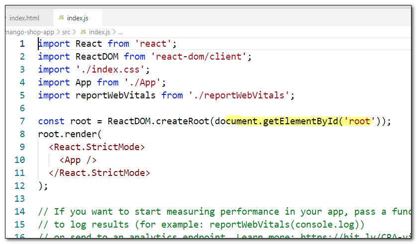
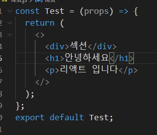

#
2-컴포넌트
#
목차
1. 리액트컴포넌트 1.1. 리액트 앱 실행명령어 1.2. 이미지 리소스 주소 1.3. 컴포넌트의 조건 1.4. 컴포넌트 만들기 1.5. 컴포넌트 규칙 1.5.1. Fragment
1.6. 컴포넌트 내보내기 1.7. Mission
2. 망고회원앱 만들기 2.1. 스타일 파일 다운로드 2.2. 작성
#
1. 리액트컴포넌트
#
1.1. 리액트 앱 실행명령어
npm start
#
1.2. 이미지 리소스 주소
아래의 주소 중 하나를 복사해서 사용하세요
http://qwerew.cafe24.com/images/pet-1.jpg
http://qwerew.cafe24.com/images/pet-2.jpg
http://qwerew.cafe24.com/images/pet-3.jpg
http://qwerew.cafe24.com/images/pet-4.jpg
http://qwerew.cafe24.com/images/pet-5.jpg
http://qwerew.cafe24.com/images/pet-6.jpg
http://qwerew.cafe24.com/images/pet-7.jpg
http://qwerew.cafe24.com/images/pet-8.jpg
react-test/
|-node_modules/ # 의존성 파일을 담은 폴더
|- src/
|- App.js # 최상위 컴포넌트
|- index.js # 앱 진입점 파일 (Entry Point)
|- public/
|- index.html # HTML 템플릿 파일과 정적 리소스를 담은 폴더
|- package.json # 프로젝트 정보와 종속성 관리 파일
- node_modules: 의존성 파일이 저장되는 폴더입니다.
- package.json 에 각 파일의 정보가 기록되어 있습니다.
- src : 실제 소스 코드가 위치하는 곳입니다
- public : 정적인 리소스와 HTML 템플릿 파일(index.html)이 위치합니다. 이곳에 있는 파일은 빌드 시 자동으로 결과물에 포함됩니다
- package.json : 프로젝트 정보와 종속성(dependency) 관리를 위한 설정 파일입니다.
- package.lock.json : package.json 보다 자세한 정보가 기록된 설정파일로 시스템에서 관리하는 파일입니다. 임의로 수정하시면 오류가 발생할수 있습니다..
- App.js : 최상위 컴포넌트
- 리액트는 작은 컴포넌트 단위로 이루어 지는데 App 컴포넌트는 이런 작은 모듈들을 모두 모아주는 최상위 컴포넌트입니다.
- index.js : ReactDOM.render() 함수를 사용하여 최상위 컴포넌트(App 컴포넌트)를 실제 DOM에 마운팅(mounting)합니다. 엔트리포인트는 앱의 시작점으로서, 주로 라우팅 설정, 상태 관리 등의 초기화 작업도 이곳에서 수행될 수 있습니다
- 이 파일에서 ReactDOM.render() 함수는 public 폴더의 index.html 문서의 실제 DOM 과 리액트 DOM 과 연결하는 역할을 합니다.
- 아래의 코드는 App 컴포넌트를 DOM에 넣어 화면에 그리겠다는 의미 입니다.
- 
#
1.3. 컴포넌트의 조건
컴포넌트가 화면에 보여지는 것을 렌더링(Rendering) 이라고 합니다
우선 src 폴더의 App.js 파일을 열어서 소스를 분석해 보겠습니다.
App.js
// 동위에 위치한 logo.svg 파일을 임포트 합니다
import logo from './logo.svg';
// 동위에 위치한 App.css 파일을 임포트 합니다
import './App.css';
//App 이라는 이름의 함수형 컴포넌트를 선언합니다.
function App() {
//컴포넌트는 UI요소를 리턴합니다.
return (
<div className="App">
<header className="App-header">
<img src={logo} className="App-logo" alt="logo" />
<p>
Edit <code>src/App.js</code> and save to reload.
</p>
<a className="App-link" href="https://reactjs.org" target="_blank" rel="noopener noreferrer">
Learn React
</a>
</header>
</div>
);
}
//App 컴포넌트를 외부에서 임포트 할수 있도록 익스포트 합니다.
export default App;컴포넌트의 조건
- 함수(클래스)로 구성되어 있다.
- 반드시 UI 요소(태그랑 비슷하게 생김)를 return 해야 한다.
- 이름이 대문자로 시작한다.
#
1.4. 컴포넌트 만들기
컴포넌트는 포함관계를 가질수 있으며 위계에 따라 부모와 자식으로 나뉘어집니다.
간단한 컴포넌트를 생성해봅시다.
src 폴더 하위에 Child.js 생성
src/Child.jsfunction Child() { return <h3>나는 자식입니다.</h3>; } export default Child;src / App.js 열기
src/App.jsimport logo from './logo.svg'; import './App.css'; import Child from './Child'; function App() { return ( <div> <h1>안녕하세요</h1> <Child /> //컴포넌트 이므로 태그형식으로 작성 <Child /> <Child /> <Child /> </div> ); } export default App;
#
1.5. 컴포넌트 규칙
- 컴포넌트는 다른 컴포넌트를 포함할수 있으나 컴포넌트 내부에 다른 컴포넌트를 정의하면 안됩니다.
- 최상위 요소는 유일 해야 합니다.
- 막음 태그가 없을 경우
/를 반드시 작성합니다
#
1.5.1. Fragment
최상위 요소를 래핑해야 하는 조건 때문에 구조가 복잡해 질수 있습니다.
이때 사용할수 있는것이 Fragment 입니다.
- ReactFragment
import { Fragment } from 'react';
const App = (props) => {
return (
<Fragment>
<div>섹션</div>
<h1>안녕하세요</h1>
<p>리액트 입니다</p>
</Fragment>
);
};
export default App;컴파일 이후에도 불필요한 div 요소가 생성되지 않습니다.
Fragment 는 <></> 빈 태그로도 작성할수 있습니다. 
const App = (props) => {
return (
<div>
<div>섹션</div>
<h1>안녕하세요</h1>
<p>리액트 입니다</p>
</div>
);
};
export default App;불필요한 div 요소가 생성 됩니다.
#
1.6. 컴포넌트 내보내기
컴포넌트는 쉽게 태그를 함수로 만들어서 반복 사용하기 위해 개발된 기술 이라고 생각합시다.
반복 사용해야 하는 UI요소 이므로
당연히 쉽게 꺼내어 쓸수 있도록 컴포넌트를 작성해야 합니다.
이번에는 컴포넌트를 내보내는 문법을 알아보겠습니다.
Member 컴포넌트를 외부로 내보내기
const Member = () => { return ( <> <span> 이름: </span> <span> 김망고</span> </> ); }; export default Member;Picture 컴포넌트를 작성후 외부로 내보내기
const Picture = () => { return ( <> <span> 사진: </span> <img src="http://qwerew.cafe24.com/images/pet-7.jpg" alt="" />; </> ); }; export { Picture };App 컴포넌트에서 임포트 하기
import './styles.css'; import { Picture } from './Picture'; import Member from './Member'; export default function App() { return ( <div className="App"> <Member /> <Picture /> </div> ); }
#
1.7. Mission
자신만의 컴포넌트를 만들어보세요
http://qwerew.cafe24.com/images/pet-2.jpg
http://qwerew.cafe24.com/images/pet-3.jpg
http://qwerew.cafe24.com/images/pet-4.jpg
#
2. 망고회원앱 만들기
#
2.1. 스타일 파일 다운로드
#
2.2. 작성
스타일 파일을 다운로드 하여 src 폴더 하위에 압축을 풉니다.
index.css 파일을 열고 코드를 수정합니다.
index.css@import url(./styles/common.css);src 폴더에 MemberItem.js 파일을 생성후 아래의 코드를 작성합니다.
MemberItem.jsimport './MemberItem.css'; const MemberItem = () => { return ( <ul className="list_body"> <li className="list_item"> <div className="list_img"> <img src="http://qwerew.cafe24.com/images/pet-1.jpg" alt="" /> </div> <div className="list_desc"> <span className="title">이름</span> <span className="text">머리묶은 김망고</span> </div> <div className="list_desc"> <span className="title">이메일</span> <span className="text">abc@de.com</span> </div> </li> <li className="list_item"> <div className="list_img"> <img src="http://qwerew.cafe24.com/images/pet-2.jpg" alt="" /> </div> <div className="list_desc"> <span className="title">이름</span> <span className="text">머리묶은 김망고</span> </div> <div className="list_desc"> <span className="title">이메일</span> <span className="text">abc@de.com</span> </div> </li> </ul> ); }; export default MemberItem;src 폴더에 MemberItem.css 파일을 생성후 아래의 코드를 작성합니다.
MemberItem.css.list_body { padding: 2vw; display: flex; gap: 2rem; } .list_item { padding: 2vw; border-radius: 1vw; box-shadow: 0 0 2rem rgba(0, 0, 0, 0.2); } .list_img { max-width: 15vw; margin-bottom: 1.5rem; } .list_desc { margin-bottom: 1.5rem; color: var(--tone-2); line-height: 1.7; display: flex; gap: 2rem; } .title { font-size: 1.4rem; font-weight: 900; color: var(--tint-2); } .text { font-size: 1.6rem; font-weight: 400; } img { width: 100%; }src 폴더의 App.js 파일을 열고 코드를 수정합니다.
App.jsimport MemberItem from './components/MemberItem'; function App() { return ( <div className="App"> <MemberItem /> </div> ); } export default App;